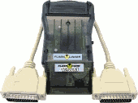
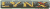
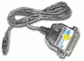

|
20050312 uCON64 frontend 1.1 released (including a Mac OS X binary) 20050126 Amiga binaries of uCON64 2.0.0 available 20050107 uCON64 frontend 1.0 released 20050107 uCON64 2.0.0 released 20041028 updated hardware list (from the current CVS version of uCON64) 20041028 unexpected release of flc 1.2.0 20040319 uCON64 1.9.8-4 released |
|
ReadME|Install|Hardware|FAQ|Changes|License|CVS|ViewCVS|Bugs?|Project page|Contact
uCON64 is a tool to backup all kinds of video game media (cartridges and CDs). It can operate as an intelligent frontend for every available emulator. uCON64 uses code from various people. See 'developers.html' for more information. uCON64 may be freely redistributed under the terms of the GNU Public License. Its main features are: - It is Free/Open Source Software - (Therefore) support for MANY platforms like: Unix, Win32, MSDOS, etc... - Support for 14+ different cartridge and disc-based video game console systems - Support for ALL common patch file formats like: IPS (with RLE compression), APS, BSL, PPF and Game Genie - Support for use and creation of RomCenter Data files (DAT) - Support for more than 20 different backup units to backup/restore ROM(s), disc(s) and SRAM(s) like: Flash Advance Linker, Flash 2 Advance, Doctor V64 (Junior), Super Wild Card, Game Doctor, Dexdrive, Super Magic Drive, Game Boy Xchanger, Mad Catz Camera Link, Lynxit, MD-PRO, SMS-PRO, PCE-PRO, GG-PRO, Super Flash and more. - Finally 150+(!) different options/features for every kind of ROM handling/management known to man; including: VERY verbose ROM information for ALL systems, detection of bad dumps using internal checksums or DAT files, CRC32, SHA1 and MD5 calculation, ROM comparison, modification (strip, pad, etc...), SRAM conversion (emulator <-> backup unit), DiscJuggler and Nero image conversions, complete gzip and zip support for all file-related functions, etc... - Still in development with support for new backup units and stuff like UNIF (NES), NSRT (SNES), etc...  Have a look at uCON64misc for support files like parport drivers, etc. or uCON64dat for DAT files generated with/for uCON64 SWC-compatibility.txt A Super Wild Card compatibility list Screenshots: 1|2|3|4|5 STILL IN DEVELOPMENT/*NO* IT IS NOT AN EMULATOR/IT IS A BACKUP TOOL  ucon64-2.0.0-src.tar.gz ucon64-2.0.0-src.zip 
 ucon64-2.0.0-linux-bin.tar.gz  (MinGW) (MinGW)ucon64-2.0.0-win32-mingw-bin.zip (Visual C++)ucon64-2.0.0-win32-vc-bin.zip (Cygwin) ucon64-2.0.0-win32-cygwin-bin.zip  ucon64-2.0.0-dos-bin.zip ucon64-2.0.0-beos-bin.zip  ucon64-2.0.0-solaris-bin.tar.gz  ucon64-2.0.0-freebsd-bin.tar.gz ucon64-2.0.0-openbsd-bin.tar.gz  ucon64-2.0.0-macosx-bin.tar.gz  (PPC & 68k) (PPC & 68k)ucon64.lha |
|
FAQ|CVS|Bugs?|Contact
Completely new, tested and working DAT files for all known ROMs generated with uCON64 (uCON64 option: --mkdat=DATFILE) You may read the FAQ or just put them into ~/.ucon64/dat/ (might depend on which platform you use) They should also work with other ROM checking tools THESE ARE ONLY DAT FILES - YOU STILL NEED uCON64 ITSELF snes-even-better.zip (by JohnDie and dbjh with many thanks to Cowering and Nach) gen-20031115.zip (by pauloB) gg-20031115.zip (by pauloB) sms-20031115.zip (by pauloB) n64-20031115.zip (by pauloB) fds-20031116.zip (by pauloB) pce-20031116.zip (by pauloB) nes-20031208.zip (by JohnDie) to be continued... For more DAT files see http://emulationrealm.net/ |
|
You hate the commandline for being a commandline? No problem! Here are some frontends for your favourite console tool and different platforms. Currently there exist frontends for Linux (Unix), Windows, BeOS and Java. Screenshots: 1|2|3|4|5|6 THESE ARE ONLY FRONTENDS - YOU STILL NEED uCON64 ITSELF uf-FOX-1.1-src.tgz SeeUCONv1.0-src.zip (does NOT work correctly with uCON64 2.0.0) uf-FOX-1.1-linux-bin.zip uf-FOX-1.1-win32-bin.zip uf-FOX-1.1-macosx-bin.zip (with thanks to Steve Paige) can be found here (thanks to Ove) SeeUCONv1.0.zip (does NOT work correctly with uCON64 2.0.0) |
 Quick guide to the most Video Game Connectors and Cables cxa1645.pdf CXA1645P/M is an RGB encoder used in many consoles and other video hardware These specifications were made for you if your console lacks S-Video or RGB and IF you have some knowledge about electronics  and and  faqs.zip (~1.1 MB) A loose collection of FAQ's about Hardware, modifications like PAL/NTSC switches, or backup unit manuals custom.zip Selfmade read-only backup unit for Super Nintendo and Sega Mega Drive with sources and PCB layouts (not tested) userport.zip giveio.zip I/O port driver for Windows NT, Windows 2000 or Windows XP Only necessary to access the parallel port vgs.zip Original sources of VGS the well-known transfer tool from JSI dos32.zip dos4gw.zip csdpmi5b.zip Some DOS extenders/DPMI hosts. uCON64 needs the files in csdpmi5b.zip under plain DOS (DOS without Windows) port95nt.exe One of the three DLL I/O port drivers supported by the Windows versions of uCON64 (see the FAQ for links to the other two) Only necessary to access the parallel port zlib.zip zlib.dll (Cygwin) cygwindll.zip cygzdll.zip Needed by the uCON64 Cygwin port to work ioport.zip I/O port driver from Caz Only necessary to access the parallel port (i386)lxrun-0.9.5.tar.gz Lxrun is a user-space program that allows users of SCO(r) OpenServer(tm), UnixWare(tm), and Sun(r) Solaris(tm) x86 operating systems to run ELF and a.out format Linux binaries cdrecord-hack.zip cdrecord pads an additional two sectors onto every audio track. In order to get a 300 sector track, you must burn a track with 298 sectors (298+2=300, QED)  preboot32.zip Loader for Flash Advance Linker (uCON64 options: --multi, --xfalmulti, --xfal) mdpacku4.zip Loader for MD-PRO (uCON64 options: --multi, --xmd) smsdbug3.zip Loader for SMS-PRO (uCON64 options: --multi, --xgg) ggdbug3.zip Loader for GG-PRO (uCON64 options: --multi, --xgg) pceboot.zip Loader for PCE-PRO (uCON64 options: --multi, --xpce) sfbotx2.zip Loader for Super Flash (uCON64 options: --multi, --xsf) xmcd-iso.zip ISO's containing Genesis binaries to communicate with a Genesis via Mike Pavone's cable (uCON64 option: --xmcd) See http://www.retrodev.com for more information sram_1bs.zip Memory Manager 1.0 beta By R. Bubba Magillicutty 16 MBit Version (uCON64 options: --xv64, --xdjr) bb-sram2.zip SRAM Manager 2.0 is a save game memory management utility for use with Nintendo 64 memory paks and cartridges. (uCON64 options: --xv64, --xdjr) This utility is based on R. Bubba's original SRAM Manager 1.0b nil-jrbu.zip This allows the Doctor V64 Junior to backup 512M carts Send this program to your V64 Junior and then turn on the N64, it will then read 512M from the cart into its DRAM (even if the cart is smaller) Then you transfer the data from DRAM to your workstation upsram11.zip LaC's N64 ROM that can be used to upload SRAM-savegames directly to the V64 (uCON64 options: --xv64, --xdjr) ultrasmsv10.zip Sega Master System/Game Gear emulator for Nintendo 64 by Jos Kwanten (uCON64 option: --usms)  fcgb2.lzh NES emulator for GameBoy by Kami (uCON64 option: --n2gb) gbpack13.zip Menu program for multiple ROM files in one GB Card. Works with all versions of Game Boy. Supports GB Card (64 Mbit)  lynxit11.zip Lynxit is a custom made backup unit for the Atari Lynx handheld (uCON64 option: --xlit)  f2afilesv4.zip Flash 2 Advance (Ultra) support files (uCON64 options: --xf2a, --xf2amulti, --xf2ac, --xf2as, --xf2ab)  supercard_menu.zip Super Card (CF to GBA Adapter) support files (uCON64 option: --sc) |
|
ReadME|Install|Changes|License|Bugs?|Contact
This may be freely redistributed under the terms of the GNU Public License flc creates BBS-style file lists with FILE_ID.DIZ found in archives and files. Might be useful for some people. Screenshots: 1 MUST HAVE flc-1.4.0-src.tar.gz
flc-1.4.0-linux-bin.tar.gz |
Old DOORS for a Commodore Amiga Bulletin Board System  Screenshots: 1|2|3|4|5|6|7|8|9|10|11 DISCONTINUED/HISTORY |